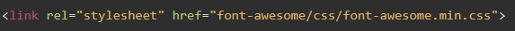

Для того что бы использовать иконочные шрифты, необходимо скачать библиотеку с официального сайта разработчика. Из архива вытаскиваем папкуи помещаем ее в директорию с проектом. Далее необходимо подключить библиотеку в html. путь указываем до файла font-awesome.min.css. У меня это выглядело так:
Теперь что бы отобразить конкретную иконку, просто пишем код иконки в виде:
Коды иконок смотрим ЗДЕСЬ